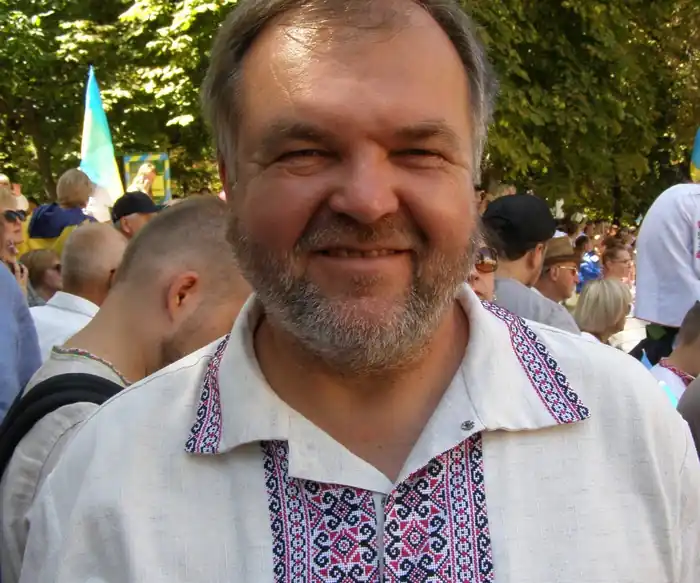

Борис Борисович Гуменюк (позивний "Кармелюк") —— український поет, прозаїк, військовик. Автор проекту "Українські книги — українським тюрмам", Координатор проекту "Інша література". Член Національної спілки письменників України (з 2006).
Народився 30 січня 1965 році в Острові біля Тернополя. Працював на виробництві в Тернополі. Був членом НРУ, УГС, очолював виконком Тернопільського обласного товариства Меморіал.
Від 1990 р. проживає у Києві. Був активним учасником Євромайдану. 30 листопада 2013 року був серед тих, хто зібралися на Михайлівській площі в Києві. Наступного дня серед перших був побитий "Беркутом" у Будинку письменників та згодом 19 січня і 18 лютого на вулиці Грушевського. 13 березня 2014 поставив свій підпис під "Заявою від діячів культури України до творчої спільноти світу", у зв'язку із російською агресією в Україні. 22 червня 2014 року приєднався до спецбатальйону МВС України "Азов" та відправився в зону бойових дій на схід України. З кінця липня 2014 р. — заступник командира батальйону "ОУН", який з 12 серпня дислокується в селищі Піски поблизу Донецька. 1 серпня 2015 року на установчому з'їзді обраний Головою УВО (Українська Військова Організація). Бібліографія: "Спосіб захисту" (К., 1993), "Лук'янівка" (К., 2005), "Острів" (2007), "Та, що прибула з неба" (2009), "Вірші з війни" (2014), "Блокпост" (2016), "100 новел про війну" (2018).